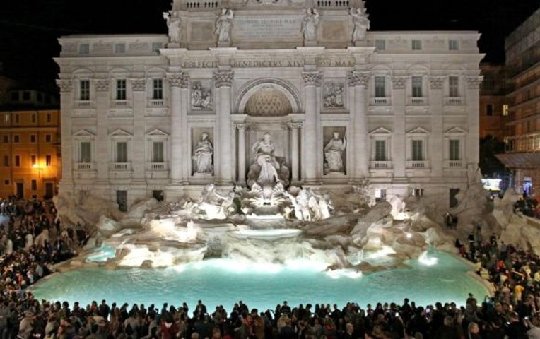
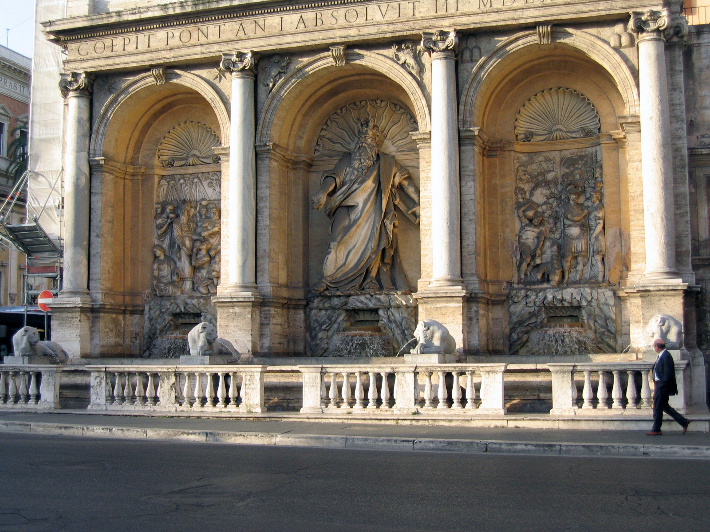

Roma ofrece al visitante innumerables funetes de agua potable, alimentadas desde hace más de 2000 años gracias a la obra de ingeniería más caracteística de los romanos, los acueductos.Los romanos han tenido siempre una gran pasión por las aguas públicas, como lo demuestran todavía los acueductos y los baños termales de la antigua Roma, y después de siglos de la decadencia de la Roma Imperial, retoman, con gran entusiasmo a jugar con el agua. Roma cuenta con más de 2000 fuentes, más que cualquier otra ciudad en el mundo.
La fuente del Agua Feliz (en italiano, Fontana dell'Acqua Felice) también conocida como fuente del Moisés es una fuente de Roma, llamada así en honor del papa Sixto V (Felice Peretti): la intención del papa era suministrar agua a los barrios surgidos en las colinas del Viminal y del Quirinal y en particular a su suntuosa y vastísima Villa Montalto, que se extendía entre ambas colinas.
Las Quattro Fontane (Las cuatro fuentes) es un grupo de cuatro fuentes de estilo tardo renacentista de la ciudad de Roma.
Las cuatro fuentes (de izquierda a derecha y de arriba hacia abajo): Río Arno, río Tiber, Juno y Diana.
El grupo de las cuatro fuentes está situado en la intersección de Via delle Quattro Fontane y Via del Quirinale. El proyecto fue un encargo del papa Sixto V, dentro del proyecto de expansión urbanística de la ciudad, llevado a cabo por este papa y su construcción se realizó, con la financiación de Muzio Mattei, entre 1588 y 1593.